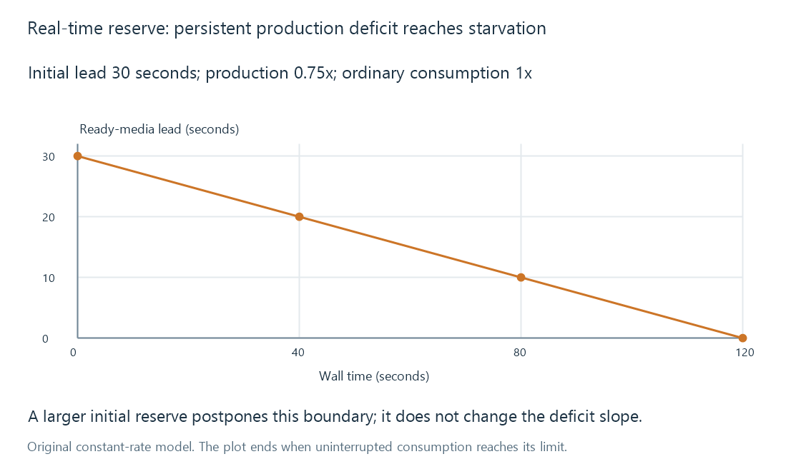

Real-time transcoding and playback deadlines
Real-time transcoding must supply usable media at the rate playback consumes it, with temporary buffer lead covering only finite production deficits.
Real-time transcoding needs to produce usable media soon enough for its playback deadlines. At ordinary speed, the viewer consumes about one second of media per second of wall time. A production path that sustains less than that rate loses ground.
A prepared buffer can delay the resulting stall. It cannot make a persistent production deficit disappear.
Production rate is media time divided by wall time
If a job produces 60 seconds of usable output in 30 seconds, its average rate is 2 media seconds per wall second, commonly described as 2x.
That result concerns the specified output and measured interval. It does not automatically predict another resolution, filter graph or concurrent workload.
A pipeline also needs to produce all the data required for presentation. Having video ready while required audio or output packaging is delayed does not supply a complete playable interval.
A thirty-second lead can drain
Use an original simplified model:
buffer lead Q(t) = Q(0) + (production rate - consumption rate) × t
Assume the initial lead is 30 media seconds, production is 0.75 media seconds per wall second, and consumption is 1. The lead decreases by 0.25 seconds each second.
| Wall time since playback starts | Remaining lead |
|---|---|
| 0 seconds | 30 seconds |
| 40 seconds | 20 seconds |
| 80 seconds | 10 seconds |
| 120 seconds | 0 seconds |

The model assumes a single relevant ready-data buffer and steady rates. Actual playback has several queues and can use recovery policies. After the buffer empties, uninterrupted playback is no longer supported by these assumptions.
Adding a larger initial lead changes the waiting time. It does not change the negative slope.
Playback rate changes the deadline
At 1.5x playback, consumption is 1.5 media seconds per wall second. A producer at 1.2x then has a deficit of 0.3.
With the same 30-second initial lead, the model reaches zero in 30 / 0.3 = 100 wall seconds. Calling 1.2x “faster than real time” without specifying playback rate hides that deficit.
A deliberate pause in playback changes consumption instead. A deliberate transcode throttle changes production when enough lead exists. Neither is equivalent to an overloaded converter that cannot meet active demand.
Server output is not client-ready media
Suppose a server produces at 2x but the delivery path supplies 3 Mbit/s for a constant 6 Mbit/s representation. The simplified delivery rate is only 0.5 media seconds per wall second.
A client buffer with 15 media seconds then drains in 30 wall seconds at ordinary playback. Fast conversion has not fixed the delivery constraint.
Likewise, sufficient network goodput does not fix a slow client decoder or display path. Playback stalls and dropped frames describe different symptoms.
Capacity needs margin over the tested interval
Difficult source portions can cost more than easy ones. Storage, transfers and concurrent jobs can change the available service rate. A short high-speed sample therefore supplies evidence about that sample, rather than proof of sustainable capacity for every session.
For a live source, the future input is not available in advance. An engine that could process stored media at 4x cannot create four future seconds of a real-time source before those seconds arrive.
See Also
- Transcoding speed, fps and media time
- Transcoding bottlenecks
- Buffering, ready media and playback reserve
- Playback stalls and unavailable next media
- Transcode throttling and producer lead